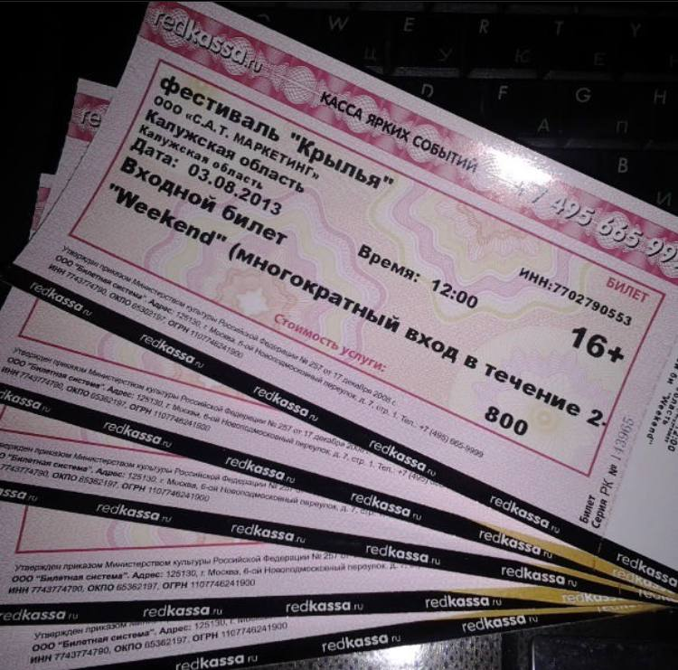

Обо мне!
Давайте знакомиться. Я Леся. Родилась в небольшом городе Львоской области, неподалёку от Карпат. Поэтому оговорюсь сразу, горы это это моё место силы и вдохновения.
У меня очень многочисленная родня, а с раннего детства я часто переезжала. Благодаря этому, общительна и нахожу общий язык с любым собеседником.
Имею высшее образование в степени бакалавра и магистра по государственному и муниципальному управлению.
Безумный трудоголик и постоянный студент, не могу стоять на месте в плане развития. Мне постоянно нужно черпать новую информацию и тут же её применять. Благодаря этому на последнем месте работы выросла от обычного оператора до директора по развитию.
И могу смело сказать, что сейчас обладаю высокой компетенцией в области документооборота, права, экономических и маркетинговых вопросов в сфере оптово-розничной торговли. А так же обладаю сторонними компетенциями, такими как настройка торгового оборудования; полная настройка с нуля 1С:УТ, создание в ней любого необходимого отчета ,в том числе создание и настойка внешних обработок. Этот список можно еще продолжать, но пожалуй, стоит остановиться на этом.
Хобби
На самом деле, я очень творческий человек и легко увлекаемый. Основное моё хобби, это искать себе новое хобби.
Так я уже занималась квиллингом, игрой на гитаре, аригами, скалолазанием, рисованием, катанием на роликах и честно, не упомню всего.
Очень люблю путешествовать и тюлений отдых не про меня, обязательной программой, являются пешие прогулки по горам и нахождение на краю обрыва, для единения с природой.
Неотъемлемой частью меня, является кулинария. Я прям фанатик готовки. Из ничего делаю, нечто безумно феерично вкусное. Поэтому недавно закончила курсы по нутрициологии, чтобы еда была не только вкусная, но и полезная. Хочу отметить, что для меня написание кода, своего рода кулинария. Ведь только грамотно подобранные сочетания рождают шедевры)))


Почему Elbrus
Начнём с того, почему разработка, а не какое либо другое направление.
В школе у нас были обязательные курсы, в которых получила сертификат web-дизайнера. С этого началось моё знакомство с html. Далее в университете, вместо курсовой работы написала простенький сайт. Позже, поработав в разных сферах, начала задумываться, что это всё не моё. На последнем месте работы приходилось сталкиваться с постоянными форс-мажорными ситуациями, связанными с очередными нововведениями, которые нужно было решать изучив очередную новую программу или сайт.
В тот момент решено было пойти учиться, и лучше тому что хоть относительно знаешь. На обучениях, написав код, я получала безумный заряд энергии. Но форматы онлайн обучения не заходили. Поэтому сейчас, зная, что код это моё, найдя формат обучения высокоинтенсивных и командный, дух соперничества никто не отменял, было принято решения пойти в Эльбрус.